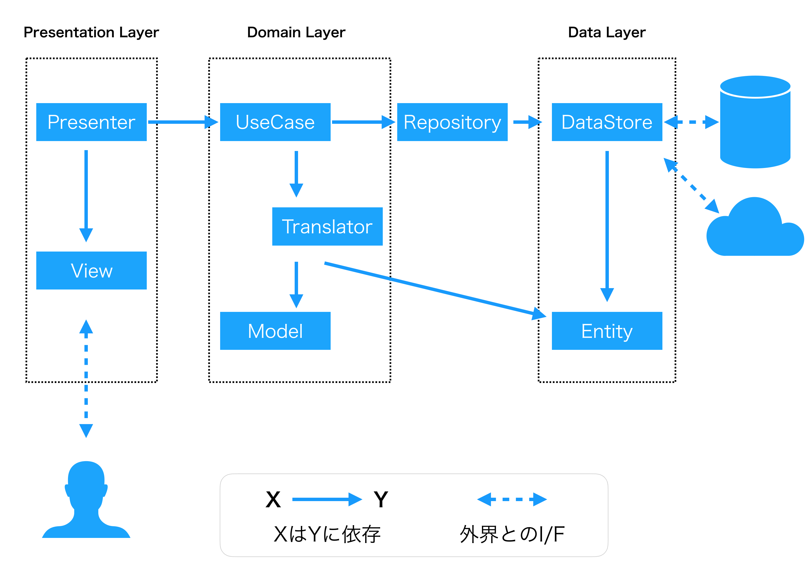

Clean Architecture Cheat Sheet
概要
- Data層
- Data層とDomain層の間
- Domain層
- Presentation層
Presentation層
View
- 画面表示
- ユーザー入力の検知
- アニメーション
- Viewは上記リストの何も知らない
Presetner
- UseCaseからの値の変更を監視、値の変更を元にViewを操作する
- Viewのユーザー入力イベントを監視、イベントを元にUseCaseの処理を呼び出す
- ViewとUseCaseのみ知っている
Domain層
UseCase
- ビジネスロジックの担当
- Presenterから処理を依頼される
- Repositoryを通じてDataStoreに処理を依頼する
- TransLatorを用いて、EntitiyとModelの変換を行う
- TransLatorとModelにアクセスできる
Model
- 内部データの表現を担当する
- ゲーム仕様に特化した形式の内部データを表現する
- Modelは何にもアクセスできない
Translator
- UseCaseから変換の処理を依頼される
- EntityとModelの相互変換の担当
- EntitiyとModelにアクセスすることができる
Domain層とData層の間
Repository
- Domain層(UseCase)からData層(DataStore)へのアクセスを担当する
- DataStoreが複数存在する場合は、RepositoryがDataStoreを切り替えアクセスする
- DataSoreにアクセスすることができる
Data層
DataSore
- 外部とのやり取りを担当する
- 外部から取得したデータを元にEntitiyを生成したり、Entitiyの情報を外部に渡したりする
- DataSoreはEntiryにアクセスすることができる
Entity
- 外部データの表現を担当
- サーバーから取得するデータ
- ストレージから取得するデータ
- データは内部のゲーム仕様に特化したデータに整形せず、外部とのやり取りに特化したデータ形式のまま扱う。
- 他のどの役割のクラスにもアクセスすることができない
